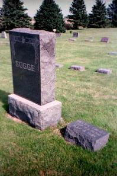

Ancestory
Nils, Lars, Ingbright and Ola were brothers. Their father was Lars Ragson Sogge, who was born in 1791 in Surnadal and died on January 12, 1862. Their mother was Gunnhild Pedersdatter Holten, born in Surnadal in 1793.

NILS LARSEN SOGGE
Born: Teigan Farm, Surnadal, Norway // September 27, 1838
Emigrated: On the vessel JOHAN from Namsos to Quebec City // Left on May 12, 1868 and arrived on July 14
Married: Karen Mathiasdatter Danielson // April 18, 1872 in Jackson County, Minnesota (more information about her is on the Danielson page)
Died: Jackson, Minnesota // March 6, 1921
Buried: Hauges Cemetery, Jackson County, Minnesota
LARS LARSEN SOGGE
Born: Teigan Farm, Surnadal, Norway // November 1, 1841
Emigrated: On the vessel JOHAN from Namsos to Quebec City // Left on May 12, 1868 and arrived on July 14
Died: Jackson Minnesota // December 14, 1911
Buried: Hauges Cemetery, Jackson County, Minnesota
INGBRIGHT LARSEN SOGGE
Born: Teigan Farm, Surnadal, Norway // January 23, 1848
Emigrated: On the vessel JOHAN from Namsos to Quebec City // Left on May 12, 1868 and arrived on July 14
Died: Unknown
Buried: Unknown
OLA LARSEN SOGGE
Born: Teigan Farm, Surnadal, Norway // July 1, 1844
Emigrated: Unknown
Died: Unknown
Buried: Unknown